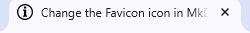

How to change the Favicon icon in MkDocs
Changing the favicon in a documentation site helps with branding and recognition. This guide will help you change the Favicon icon in Material for MkDocs and Read the Docs for MkDocs themes available in MkDocs.
Prerequisites:
Before proceeding, make sure you have:
- A documentation project using MkDocs.
- The Material or Read the Docs theme installed.
- A
.icoor.pngfile ready to use as your favicon.- Named simply, like
favicon.icoorfavicon.png - Ideally in 32x32 pixels
- Named simply, like
For Material Theme
Step 1 : Place your Favicon file
Place your favicon file (typically favicon.ico, but .png also works) in the docs/ directory or a subdirectory like docs/img/.
For Example:
my-project/
├── docs/
│ ├── img/
│ │ └── favicon.ico
│ └── index.md
├── mkdocs.yml
Step 2 : Update the mkdocs.yml file
Add the following under the theme: section in your mkdocs.yml:
theme:
name: material
favicon: img/favicon.ico
docs/ directory.
Here's the complete example with material theme:
site_name: How-to-Guides
theme:
name: material
favicon: img/favicon.ico
markdown_extensions: # Some extensions to beautify code, etc
- codehilite
- pymdownx.highlight
- pymdownx.superfences
- admonition
- pymdownx.details
nav: # Structure of the page
- Host MkDocs project using GitHub Pages: index.md
- Change the Favicon icon in MkDocs: fav.md
Step 3 : Preview your Changes
After the changes, run:
mkdocs serve
http://127.0.0.1:8000 — the favicon should now appear in the tab. As here, you can see ⓘ icon as the favicon in the browser tab.

For Read the Docs Theme
Step 1 : Place your Favicon file
Place your favicon file (typically favicon.ico, but .png also works) in the docs/ directory or a subdirectory like docs/img/.
For Example:
my-project/
├── docs/
│ ├── img/
│ │ └── favicon.ico
│ └── index.md
├── mkdocs.yml
Step 2 : Do not Update the mkdocs.yml file
MkDocs will automatically detect and use the favicon.ico in the docs/img folder as your favicon icon.
theme:
name: material
Here's the complete example with readthedocs theme:
site_name: How-to-Guides
theme:
name: readthedocs
markdown_extensions: # Some extensions to beautify code, etc
- codehilite
- pymdownx.highlight
- pymdownx.superfences
- admonition
- pymdownx.details
nav: # Structure of the page
- Host MkDocs project using GitHub Pages: index.md
- Change the Favicon icon in MkDocs: fav.md
Step 3 : Serve & Test locally
After the changes, run your site locally:
mkdocs serve
http://127.0.0.1:8000 and check your browser tab for the updated favicon. As here, you can see ⓘ icon as the favicon in the browser tab.
Troubleshooting Tips
- Cache issues : If the favicon doesn’t update, try a hard refresh
(Ctrl+Shift+R)or clear browser cache. - Use
.icofor better cross-browser compatibility.
Sample Folder Structure
project-name/
├── docs/
│ ├── index.md
│ ├── img/
│ │ └── favicon.ico
├── mkdocs.yml